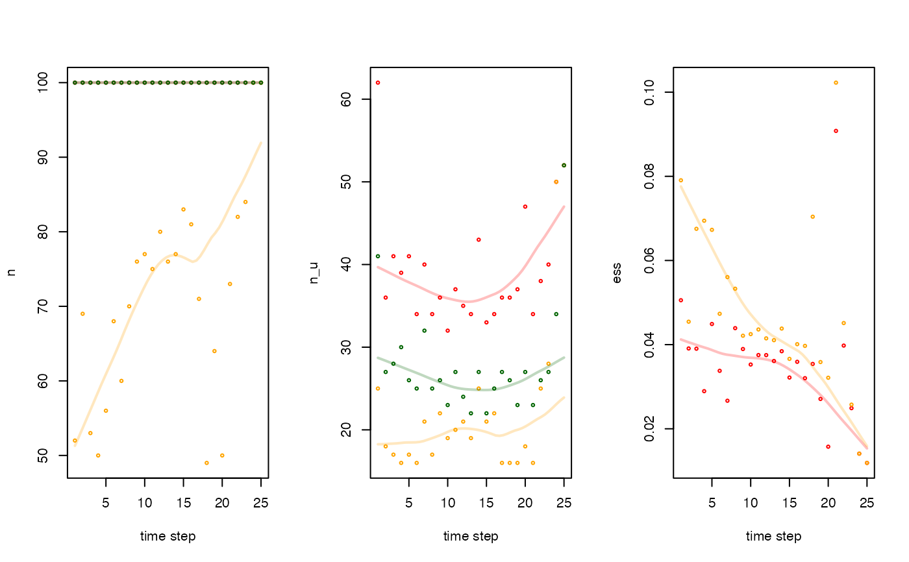

These functions collate particle diagnostics from pf_forward() and pf_backward_*().
pf_diag_convergence(.sink, ...)
pf_diag_summary(.history, ...)For pf_diag_convergence(), .sink specifies particle diagnostics. The following inputs are accepted:
A pf_particles object;
A character string that defines the directory containing parquet files, specified in one of the following formats:
{.record$sink} (as specified in pf_forward());
{.record$sink}/diagnostics/;
Additional arguments.
In pf_diag_convergence(), ... is passed to arrow::open_dataset().
In pf_diag_summary(), ... is passed to .pf_history_dt(). .collect, if used, is necessarily TRUE and should not be specified.
For pf_diag_summary(), .history expects particle samples, provided in any format accepted by .pf_history_dt().
pf_diag_*() functions return data.tables.
pf_diag_convergence() returns the diagnostics
data.table of a pf_particles-class object.
pf_diag_summary returns a summary data.table with the following columns:
timestep---an integer that defines the time step;
n---an integer that defines the number of particles;
n_u---an integer that defines the number of unique location samples (see .pf_diag_nu());
ess---a double that defines the effective sample size or NA_real_ if the lik column is unavailable (see .pf_diag_ess());
Particle diagnostics are fully described in pf_diag-internal.
pf_diag_convergence() collates convergence diagnostic outputs from pf_forward(). If pf_forward() is implemented with .record$save = TRUE, the outputted pf_particles object from pf_forward() includes a pre-compiled data.table of diagnostics (see pf_opt_record()). pf_diag_convergence() accepts a pf_particles object, but there is really no need for this, as a diagnostics element is already present in this object. Instead, pf_diag_convergence() is primarily designed to collate particle diagnostics on file. pf_forward() writes particle diagnostics to {.record$sink}/diagnostics (see pf_opt_record()). You can supply {.record$sink} or {.record$sink}/diagnostics/ to this function. The individual data.tables are collated to match the form in which they are provided by pf_forward() when .record$save = TRUE.
pf_diag_summary() summarises particle diagnostics directly from (accepted) particle samples. This can be used for pf_forward() or pf_backward_*().
pf_forward(), pf_backward_killer() and pf_backward_sampler() implement the forward simulation and the backward pass;
pf_diag_convergence() and pf_diag_summary() collect diagnostics;
.pf_diag_() functions are internal routines that calculate diagnostic statistics;
#### Example (1): Examine convergence diagnostics from `pf_forward()`
# For outputs stored in memory, extract the `diagnostics` element
dat_pff()$diagnostics
#> iter_m iter_i timestep component trial n n_u ess
#> 1: 1 1 1 proposal NA 203 203 0.004926108
#> 2: 1 1 1 lik-acs_filter_land NA 203 203 0.004926108
#> 3: 1 1 1 lik-acs_filter_container NA 203 203 0.004926108
#> 4: 1 1 1 lik-pf_lik_ac NA 177 177 0.078771993
#> 5: 1 1 1 sample-origin 1 100 62 0.050553181
#> ---
#> 121: 1 1 25 proposal 1 100 80 0.010000000
#> 122: 1 1 25 lik-acs_filter_land 1 100 80 0.010000000
#> 123: 1 1 25 lik-acs_filter_container 1 100 80 0.010000000
#> 124: 1 1 25 lik-pf_lik_ac 1 100 80 0.014192194
#> 125: 1 1 25 sample-kick 1 100 52 0.011891797
# `pf_diag_convergence()` also works but is unnecessary
pf_diag_convergence(dat_pff())
#> iter_m iter_i timestep component trial n n_u ess
#> 1: 1 1 1 proposal NA 203 203 0.004926108
#> 2: 1 1 1 lik-acs_filter_land NA 203 203 0.004926108
#> 3: 1 1 1 lik-acs_filter_container NA 203 203 0.004926108
#> 4: 1 1 1 lik-pf_lik_ac NA 177 177 0.078771993
#> 5: 1 1 1 sample-origin 1 100 62 0.050553181
#> ---
#> 121: 1 1 25 proposal 1 100 80 0.010000000
#> 122: 1 1 25 lik-acs_filter_land 1 100 80 0.010000000
#> 123: 1 1 25 lik-acs_filter_container 1 100 80 0.010000000
#> 124: 1 1 25 lik-pf_lik_ac 1 100 80 0.014192194
#> 125: 1 1 25 sample-kick 1 100 52 0.011891797
# For outputs stored on file, use `pf_diag_convergence()`
pff_folder <- dat_pff_src(.folder = NULL)
pf_diag_convergence(pff_folder)
#> iter_m iter_i timestep component trial n n_u ess
#> 1: 1 1 1 proposal NA 203 203 0.004926108
#> 2: 1 1 1 lik-acs_filter_land NA 203 203 0.004926108
#> 3: 1 1 1 lik-acs_filter_container NA 203 203 0.004926108
#> 4: 1 1 1 lik-pf_lik_ac NA 177 177 0.078771993
#> 5: 1 1 1 sample-origin 1 100 62 0.050553181
#> ---
#> 121: 1 1 25 proposal 1 100 80 0.010000000
#> 122: 1 1 25 lik-acs_filter_land 1 100 80 0.010000000
#> 123: 1 1 25 lik-acs_filter_container 1 100 80 0.010000000
#> 124: 1 1 25 lik-pf_lik_ac 1 100 80 0.014192194
#> 125: 1 1 25 sample-kick 1 100 52 0.011891797
pf_diag_convergence(file.path(pff_folder, "diagnostics"))
#> iter_m iter_i timestep component trial n n_u ess
#> 1: 1 1 1 proposal NA 203 203 0.004926108
#> 2: 1 1 1 lik-acs_filter_land NA 203 203 0.004926108
#> 3: 1 1 1 lik-acs_filter_container NA 203 203 0.004926108
#> 4: 1 1 1 lik-pf_lik_ac NA 177 177 0.078771993
#> 5: 1 1 1 sample-origin 1 100 62 0.050553181
#> ---
#> 121: 1 1 25 proposal 1 100 80 0.010000000
#> 122: 1 1 25 lik-acs_filter_land 1 100 80 0.010000000
#> 123: 1 1 25 lik-acs_filter_container 1 100 80 0.010000000
#> 124: 1 1 25 lik-pf_lik_ac 1 100 80 0.014192194
#> 125: 1 1 25 sample-kick 1 100 52 0.011891797
# Outputs are identical
stopifnot(isTRUE(all.equal(
dat_pff()$diagnostics,
pf_diag_convergence(pff_folder)
)))
#### Example (2): Summarise diagnostics for accepted particle samples
## (A) Use particle samples from pf_forward() or pf_backward_*()
pf_diag_summary(.history = dat_pff())
#> timestep n n_u ess
#> 1: 1 100 62 0.05055318
#> 2: 2 100 36 0.03908928
#> 3: 3 100 41 0.03903207
#> 4: 4 100 39 0.02894283
#> 5: 5 100 41 0.04490593
#> 6: 6 100 34 0.03377718
#> 7: 7 100 40 0.02666654
#> 8: 8 100 34 0.04391636
#> 9: 9 100 36 0.03895548
#> 10: 10 100 32 0.03527352
#> 11: 11 100 37 0.03752701
#> 12: 12 100 35 0.03750975
#> 13: 13 100 34 0.03610931
#> 14: 14 100 43 0.03843398
#> 15: 15 100 33 0.03218369
#> 16: 16 100 34 0.03591832
#> 17: 17 100 36 0.03202686
#> 18: 18 100 36 0.03541228
#> 19: 19 100 37 0.02708972
#> 20: 20 100 47 0.01574373
#> 21: 21 100 34 0.09079437
#> 22: 22 100 38 0.03977482
#> 23: 23 100 40 0.02490191
#> 24: 24 100 50 0.01409432
#> 25: 25 100 52 0.01189180
#> timestep n n_u ess
pf_diag_summary(.history = dat_pfbk())
#> timestep n n_u ess
#> 1: 1 52 25 0.07905988
#> 2: 2 69 18 0.04545191
#> 3: 3 53 17 0.06752614
#> 4: 4 50 16 0.06944811
#> 5: 5 56 17 0.06728314
#> 6: 6 68 16 0.04733346
#> 7: 7 60 21 0.05604643
#> 8: 8 70 17 0.05328920
#> 9: 9 76 22 0.04211827
#> 10: 10 77 19 0.04249669
#> 11: 11 75 20 0.04360494
#> 12: 12 80 21 0.04149004
#> 13: 13 76 19 0.04105809
#> 14: 14 77 25 0.04381793
#> 15: 15 83 21 0.03661907
#> 16: 16 81 22 0.04010763
#> 17: 17 71 16 0.03970504
#> 18: 18 49 16 0.07040299
#> 19: 19 64 16 0.03586021
#> 20: 20 50 18 0.03213337
#> 21: 21 73 16 0.10226320
#> 22: 22 82 25 0.04512856
#> 23: 23 84 28 0.02574394
#> 24: 24 100 50 0.01409432
#> 25: 25 100 52 0.01189180
#> timestep n n_u ess
pf_diag_summary(.history = dat_pfbs())
#> timestep n n_u ess
#> 1: 1 100 41 NA
#> 2: 2 100 27 NA
#> 3: 3 100 28 NA
#> 4: 4 100 30 NA
#> 5: 5 100 26 NA
#> 6: 6 100 25 NA
#> 7: 7 100 32 NA
#> 8: 8 100 25 NA
#> 9: 9 100 26 NA
#> 10: 10 100 23 NA
#> 11: 11 100 27 NA
#> 12: 12 100 24 NA
#> 13: 13 100 22 NA
#> 14: 14 100 27 NA
#> 15: 15 100 22 NA
#> 16: 16 100 25 NA
#> 17: 17 100 27 NA
#> 18: 18 100 26 NA
#> 19: 19 100 23 NA
#> 20: 20 100 27 NA
#> 21: 21 100 23 NA
#> 22: 22 100 26 NA
#> 23: 23 100 27 NA
#> 24: 24 100 34 NA
#> 25: 25 100 52 NA
#> timestep n n_u ess
## (B) Use particle samples in memory or on file
# Particles can be provided in any format accepted by `?.pf_history_dt()`
d1 <- pf_diag_summary(.history = dat_pfbk())
d2 <- pf_diag_summary(.history = dat_pfbk()$history)
d3 <- pf_diag_summary(.history = dat_pfbk_src())
d4 <- pf_diag_summary(.history = pf_files(dat_pfbk_src()))
stopifnot(isTRUE(all.equal(d1, d2)))
stopifnot(isTRUE(all.equal(d1, d3)))
stopifnot(isTRUE(all.equal(d1, d4)))
## (C) Examine trends in particle diagnostics
# Collate particle diagnostics
diag_f <- pf_diag_summary(dat_pff())
diag_k <- pf_diag_summary(dat_pfbk())
diag_s <- pf_diag_summary(dat_pfbs())
# Plot diagnostic time series
pf_plot_diag_ts <- function(.f, .k, .s, .metric = c("n", "n_u", "ess"), ...){
# Define base plot
.metric <- match.arg(.metric)
ylim <- range(c(.f[[.metric]], .k[[.metric]], .s[[.metric]]), na.rm = TRUE)
plot(.f$timestep, .f[[.metric]],
xlab = "time step", ylab = .metric,
ylim = ylim, type = "n", ...)
# Add diagnostics for each algorithm
add_diag <- function(x, y, col) {
if (!all(is.na(y))) {
# Add semi-transparent smoother (colour: ct)
ct <- col2rgb(col) / 255
ct <- rgb(ct[1], ct[2], ct[3], alpha = 0.25)
lines(stats::loess.smooth(x, y), lwd = 2, col = ct)
# Add points
points(x, y, cex = 0.5, col = col)
}
invisible(NULL)
}
add_diag(.f$timestep, .f[[.metric]], col = "red")
add_diag(.k$timestep, .k[[.metric]], col = "orange")
add_diag(.s$timestep, .s[[.metric]], col = "darkgreen")
}
# Plot time series
# * Red: pf_forward()
# * Orange: pf_backward_killer()
# * Green: pf_backward_sampler()
pp <- par(mfrow = c(1, 3))
cl_lapply(c("n", "n_u", "ess"), function(.metric) {
print(.metric)
pf_plot_diag_ts(.f = diag_f,
.k = diag_k,
.s = diag_s,
.metric = .metric)
})
#> [1] "n"
#> [1] "n_u"
#> [1] "ess"

par(pp)